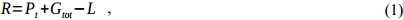
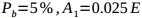

This document will provide an insight on how to roughly estimate the coverage and capacity of the mobile networks based on the Fairwaves architecture and equipment. Please be advised, that more precise estimation is possible only with detailed information about the terrain and enviromental conditions.
1. Coverage
For the estimation we considered our UmSITE-TM3 (+34.7 dBm) and UmSITE-TM10 (+40 dBm) base stations with the total antenna gain: +9 dBi, installed on the thirty meter high tower, assumping that subscriber's mobile station with sensitivity (-85 dBm) is situated on the 1.5 meters height. You may find the results of estimations in the tables below.
| UmSITE-TM3 Voice/GPRS | UmSITE-TM3 EDGE | UmSITE-TM10 Voice/GPRS | UmSITE-TM10 EDGE | |
|---|---|---|---|---|
| Open Terrain | 7000 m | 5000 m | 10000 m | 5500 m |
| Suburban | 2100 m | 1500 m | 3000 m | 1600 m |
| City | 1100 m | 750 m | 1500 m | 850 m |
| UmSITE-TM3 Voice/GPRS | UmSITE-TM3 EDGE | UmSITE-TM10 Voice/GPRS | UmSITE-TM10 EDGE | |
|---|---|---|---|---|
| Open Terrain | 5300 m | 3800 m | 7400 m | 4100 m |
| Suburban | 1400 m | 1000 m | 2000 m | 1100 m |
| City | 650 m | 450 m | 920 m | 510 m |
If you are curious about the details of estimation, please proceed with reading.
The largest and most variable quantity in the received signal strength is path loss. Path loss is the reduction in power density of an electromagnetic wave as it propagates through space. It depends on transmitter power, frequency, antenna height, mobile station location relative to obstacles and reflectors, and link distance, among many other factors.
It's handy to estimate the path loss upon a radio propagation model which is an empirical mathematical formulation for the characterization of radio wave propagation as a function of frequency, distance and other conditions. There are several realistic empirical propagation loss models, which were documented and compared by The National Institute of Standards and Technology (NIST, http://w3.antd.nist.gov/wctg/manet/calcmodels_dstlr.pdf).
We will use Hata path loss models, which is based on the CCIR (Comite' Consultatif International des Radio-Communication, now ITU-R) model and following extensive measurements of urban and suburban radio propagation losses. A convenient set of formulas known as the Hata models that are widely used in the telecom industry. There are four Hata models: Open, Suburban, Small City, and Large City. The received signal strength is equal to:
where - transmitter power in dBm, - total gain in dB, - transmission path loss in dB.
The basic formula for Hata path loss is:
where  - distance between transmitter and receiver in kilometers, - carrier frequency in MHz, - base antenna height over street level in meters, - mobile station antenna height in meters, and are empirical parameters that could be determined according to the table:
- distance between transmitter and receiver in kilometers, - carrier frequency in MHz, - base antenna height over street level in meters, - mobile station antenna height in meters, and are empirical parameters that could be determined according to the table:
Substituting (2) into (1) and solving for distance yields the following Hata maximum distance equation:

Let's find the approximate coverage distances for different types of terrain for UmSITE-TM3 base station installed on the 30 m tower working on the 900 MHz and 1800 MHz frequencies. We will also suppose the total gain equal to +8 dB (cable jumper -1 dB, omni antenna +9 dBi) and mobile station antenna height as 1.5 meters.
UmSITE-TM3 results
Let's see, how the coverage will change if we use a higher gain antenna +12 dBi:
As plots show us, the maximum possible coverage increases approximately by 1000 meters.
We can also check the coverage dependency from the UmSITE-TM3 height. For example, for GSM 1800 band:
And for GSM 900 band:
UmSITE-TM10 results
Let's find the approximate coverage distances for different types of terrain for UmSITE-TM10 base station installed on the 30m tower working on the 900 MHz and 1800 MHz frequencies. We will also suppose the total gain equal to +8 dB (cable jumper -1 dB, omni antenna +9 dBi) and mobile station antenna height as 1.5 meters.
Let's see, how the coverage will change if we use a higher gain antenna +12 dBi:
We will also plot the coverage dependency from the UmSITE-TM10 height. For example, for GSM 1800 band:
And for GSM 900 band:
With current GSM technology, we have an upper limit of a 35 km radius of coverage due to timing advance limitation (see, GSM 05.10). and this requires a high tower. Generally, we propose to use several 3W or 10W base stations with 7-10 m masts. Also, please note, that sensitivity of MS and power of BTS a lower for the EDGE, as it uses 8-PSK modulation instead of GMSK. For details, please see 3GPP TS 45.005.
2. Capacity
Carrier-grade UmSITE base stations are based on the industrial-grade UmTRX transceiver, that supports two full-duplex and fully independent RF channels. Both independent RF channels can run on any frequency from 0.3-3.8GHz and provide 16 timeslots (8 timeslots each). One of the provided timeslots is used for the signalling, so 15 timeslots left can provide up to 15 concurrent calls on GSM Full Rate or up to 30 concurrent calls on GSM Half Rate (for details see description).
To estimate, how much subscribers can one base station serve, it's reasonable to refer to the Erlang loss formula, which allows to calculate the probability of call losses for a group of identical parallel resources (channels in our case).
where - probability of blocking, - total normalised ingress load of the base station in Erlangs, n - number of identical parallel resources (channels). One Erlang corresponds to continuous use of one voice channel for 1 hour.
To find the number of subscribers that could be served by one base station:
where - normalised ingress load per one subscriber in Erlangs.
Some mobile network operators (MNO) advise to evaluate the network capacity for the normal load mode and the peak load mode. MNOs usually propose to use for the normal load mode and  for the peak load mode.
If it is not convenient to make the required calculations, precalculated Erlang B Traffic table comes to aid (see Appendix A).
The approximate estimation of the base station subscriber capacity with GSM Full Rate codec could be found in the table below:
| Normal Load | Peak Load | |
|---|---|---|
| Probability of blocking | 2% | 5% |
| Ingress load per one subscriber | 0.015 E | 0.025 E |
| Number of subscribers per UmSITE | 600 | 425 |
The plot below demonstrates the dependency between number of subscribers and probability of blocking with different load per one subscriber using Full Rate codec:
The approximate estimation of the base station subscriber capacity with GSM Half Rate codec could be found in the table below:
| Normal Load | Peak Load | |
|---|---|---|
| Probability of blocking | 2% | 5% |
| Ingress load per one subscriber | 0.015 E | 0.025 E |
| Number of subscribers per UmSITE | 1400 | 1000 |
The plot below demonstrates the dependency between number of subscribers and probability of blocking with different load per one subscriber using Half Rate codec:
3. Erlang B Traffic Table
Table 5. Number of channels to blocking probability in %.